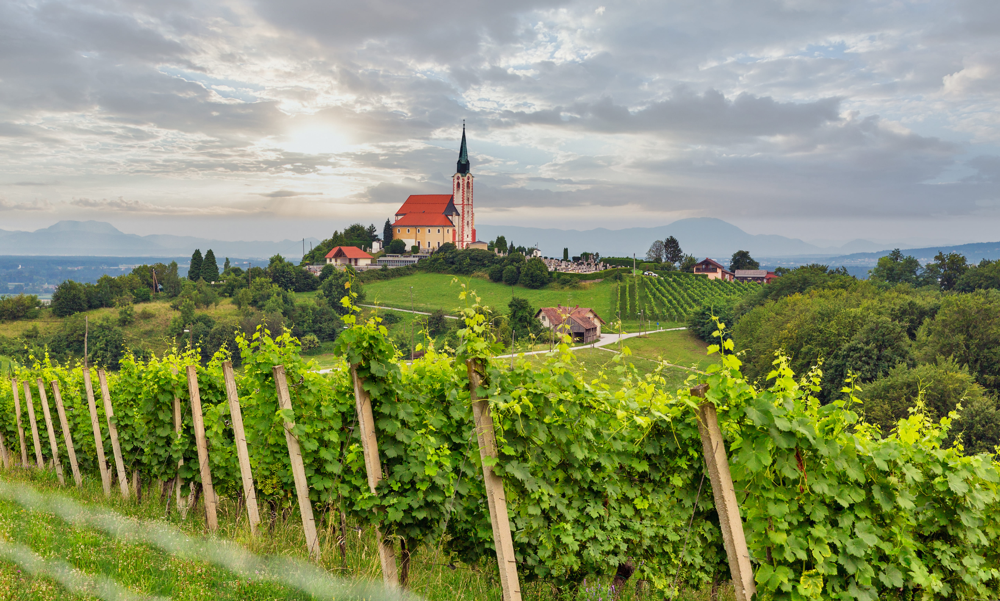
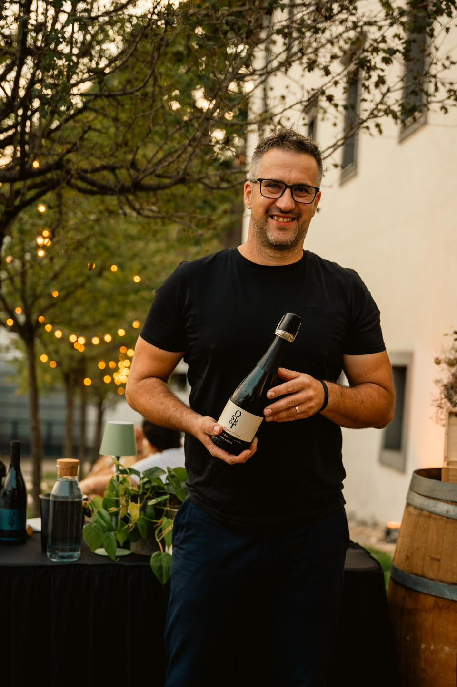

Smo družinsko vinogradniško posestvo iz Malečnika pri Mariboru, kjer z ljubeznijo do vinogradništva in spoštovanjem tradicije ustvarjamo vina pod blagovno znamko Vina Oskar. Naša zgodba temelji na predanosti kakovosti, lokalnem okolju in dolgoletnih izkušnjah, ki jih prenašamo iz generacije v generacijo.
Naše vinograde in posestvo najdete v slikovitem okolju Malečnika, med vinorodnimi griči Štajerske. Ugodna lega, sončni vinogradi in skrbno obdelana zemlja nam omogočajo pridelavo grozdja najvišje kakovosti.

Ponosni smo na bogato ponudbo vin in penin, med katerimi so:

Pozdravljeni!
Sem Matej Markuš, vinogradnik in vinar ter ustanovitelj blagovne znamke Vina Oskar. Moja zgodba se je začela v Malečniku pri Mariboru, kjer sem odraščal ob vinogradih in družinski tradiciji, ki jo je postavil moj dedek Oskar. Prav po njem je naša domačija dobila ime, ki danes živi skozi naša vina.
Čeprav moja prvotna pot ni bila povezana z vinarstvom, sem kmalu spoznal, da me najbolj privlačita narava in delo v vinogradu. Zato sem se usmeril v agronomijo in enologijo ter svoje znanje več kot desetletje izpopolnjeval v različnih vinskih kleteh. Te izkušnje so mi dale trdne temelje za razvoj lastne vinske zgodbe.
»Moja vizija je bila vedno ustvarjati vina, ki odražajo značaj štajerske pokrajine, naših vinogradov in letnika.«
Verjamem, da se kakovost vina začne v vinogradu, zato veliko pozornosti namenjam skrbni obdelavi trt in pridelavi zdravega grozdja. Pri delu združujem spoštovanje tradicije s sodobnimi pristopi vinarstva.
Danes skupaj z družino razvijamo in izpopolnjujemo naše vino in turizem v prepoznavno vinsko in turistično destinacijo.
Posebej ponosen sem na naše penine in aromatična bela vina, ki redno prejemajo priznanja na domačih in mednarodnih ocenjevanjih. Vsaka steklenica nosi del naše zgodbe, predanosti in ljubezni do vinogradništva.
Veseli me, da lahko obiskovalcem skozi naša vina predstavim bogato vinogradniško dediščino Malečnika ter pristno gostoljubnost Štajerske.